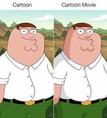
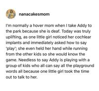

0

0

MacRumors reports that Apple has effectively paused work on Vision Pro after the M5 refresh failed to revive demand. The team has reportedly been reassigned and the company is now shifting focus toward smart glasses instead. From the report: The Vision Pro has been criticized for its high price tag and its uncomfortable weight. The device is over 1.3 pounds, and even with the more comfortable Dual Knit Band that Apple added to redistribute weight, it continues to be hard to wear for long periods of time. The M5 chip added a 120Hz refresh rate, 10 percent more rendered pixels, and around 30 additional minutes of battery life, but the price tag stayed at $3,499, and it ended up not selling well. The Vision Pro has been unpopular since it first launched, and Apple only sold around 600,000 units in total. Insider sources told MacRumors that Apple has received an unusually high percentage of returns, far exceeding any other modern Apple product.
[...] If Apple finds a way to create a much cheaper, more comfortable VR headset in the future, the Vision Pro line could be revived, but right now, the company has no plans to launch a new model. Apple has not discontinued the Vision Pro and is continuing to sell the M5 model. Instead of continuing to experiment with virtual reality, Apple is working on smart glasses that will eventually incorporate augmented reality capabilities, but the first version will be similar to the Ray-Ban Meta smart glasses with AI and no integrated display.
Read more of this story at Slashdot.
Longtime Slashdot reader schwit1 writes: California's long-delayed high-speed rail project is now facing renewed scrutiny after state leaders revealed a dramatically higher price tag, now estimated at roughly $231 billion, nearly seven times the original $33 billion projection approved by voters in 2008. The revised figures have reignited talks in Sacramento over whether the project can realistically be completed, how long it will take, and whether the state can continue to fund it at this scale.
Senator Strickland pointed to comments from Lou Thompson, former chair of the California High-Speed Rail Authority peer review group, who recently criticized the latest draft business plan. Thompson wrote that the 2026 draft plan "has reached a dead end," arguing that the project has drifted far from its original vision due to escalating costs, delays, and unfunded gaps. Under current projections, assuming funding and construction proceed as planned, service between San Francisco and Bakersfield could begin around 2033, while the full Los Angeles to San Francisco connection could extend to 2040.
Read more of this story at Slashdot.
An anonymous reader quotes a report from Wired: A controversial bill in Colorado that would have undone some repair protections in the state has failed. The bill had been the target of right-to-repair advocates, who saw it as a bellwether for how tech companies might try to undo repair legislation more broadly in the US. Colorado's landmark 2024 repair law, the Consumer Right to Repair Digital Electronic Equipment, went into effect in January 2026 and ensured access to tools and documentation people needed to modify and fix digital electronics such as phones, computers, and Wi-Fi routers. The new bill, SB26-090, would have carved out an exception to those repair protections for "critical infrastructure," a loosely defined term that repair advocates worried could be applied to just about any technology.
SB26-090 was introduced during a Colorado Senate hearing on April 2 and was supported by lobbying efforts from companies such as Cisco and IBM. It passed that hearing unanimously. The bill then passed in the Colorado Senate on April 16. On Monday evening, the bill was discussed in a long, delayed hearing in the Colorado House's State, Civic, Military, and Veterans Affairs Committee. Dozens of supporters and detractors gave public comments. Finally, the bill was shot down in a 7-to-4 vote and classified as postponed indefinitely. "While we were making progress at chipping away at the momentum for it, we had still been losing," said Danny Katz, executive director of the local nonprofit consumer advocacy group CoPIRG. "So, we took nothing for granted, and I believe the incredible testimony from the broad range of cybersecurity experts, businesses, repair advocates, recyclers, and people who want the freedom to fix their stuff made a big difference."
Read more of this story at Slashdot.
Hashicorp co-founder Mitchell Hashimoto says GitHub's frequent outages have made it "no longer a place for serious work," prompting him to move his Ghostty terminal emulator project elsewhere after 18 years on the platform. The Register reports: "I've been angry about it. I've hurt people's feelings. I've been lashing out. Because GitHub is failing me, every single day, and it is personal. It is irrationally personal," he wrote. The reason for his ire is the service has become unreliable. "For the past month I've kept a journal where I put an 'X' next to every date where a GitHub outage has negatively impacted my ability to work," he wrote. "Almost every day has an 'X'. On the day I am writing this post, I've been unable to do any PR review for ~2 hours because there is a GitHub Actions outage."
Hashimoto penned his post a few days before an April 28 incident that saw pull requests fail to complete due to an Elasticsearch SNAFU. Incidents like that mean Hashimoto has decided GitHub "is no longer a place for serious work if it just blocks you out for hours per day, every day." "It's not a fun place for me to be anymore," he lamented. "I want to be there but it doesn't want me to be there. I want to get work done and it doesn't want me to get work done. I want to ship software and it doesn't want me to ship software."
The developer says he wants GitHub to improve, but "I also want to code. And I can't code with GitHub anymore. I'm sorry. After 18 years, I've got to go." He's open to a return if GitHub can deliver "real results and improvements, not words and promises." But for now, he's working to move Ghostty to another collaborative code locker. "We have a plan but I'm also very much still in discussions with multiple providers (both commercial and FOSS)," Hashimoto wrote. "It'll take us time to remove all of our dependencies on GitHub and we have a plan in place to do it as incrementally as possible."
He's doing the equivalent of leaving a toothbrush at a former partner's house by leaving a read-only mirror of Ghostty on GitHub, and by keeping his personal projects on the Microsoft-owned service. But Hashimoto's moving his day job somewhere new. "Ghostty is where I, our maintainers, and our open source community are most impacted so that is the focus of this change. We'll see where it goes after that," he concluded.
Read more of this story at Slashdot.
Tony Isaac shares a report from NPR: Federal survey data shows that the amount of math homework assigned to fourth and eighth grade students, in particular, has been steadily declining for the past decade. Some educators and parents say this is a good thing -- students shouldn't spend six or more hours a day at school and still have additional schoolwork to complete at home. But the research on homework is complicated. Some studies show that students who spend more time on homework perform better than their peers. For example, a longitudinal study released in 2021 of more than 6,000 students in Germany, Uruguay and the Netherlands found that lower-performing students who increased the amount of time they spent on math homework performed better in math, even one year later.
Other studies, however, suggest homework has minimal outcomes on academic performance: A 1998 study of more than 700 U.S. students led by a researcher at Duke University found that more homework assigned in elementary grades had no significant effect on standardized test scores. The researchers did find small positive gains on class grades when they looked at both test scores and the proportion of homework students completed. More homework was also associated with negative attitudes about school for younger children in the study. "The best educators figured out a long time ago that we can control what we can control," and that's what happens during the school day, Superintendent Garrett said, not homework. "There has been a shift away from it naturally anyway, and I felt like this made it equitable across our entire school system." "The best argument for homework is that mathematical procedures require practice, and you don't want to waste classroom time on practice, so you send that home," said Tom Loveless, a researcher and former teacher who has studied homework.
Ariel Taylor Smith, senior director of the Center for Policy and Action at the National Parents Union, said: "The thing they point to is that it's an equity issue, and not all parents have the same availability and ability to support their students. I would make the argument that if a kid is really far behind in school, that's an equity issue. They need the additional time to practice." Kids, she said, "need more practice ... Sometimes, you do have to practice the boring stuff, like math."
"The interesting issue for folks to consider is not should there be more homework, but should there be better homework," said Joyce Epstein, who has studied homework and is the co-director of the Center on School, Family, and Community Partnerships at the Johns Hopkins University School of Education. "Better homework in math might be knowing the fact that kids don't have to be practicing for hours, 10 to 20 examples," when they could establish mastery in less time.
Read more of this story at Slashdot.
An anonymous reader quotes a report from NBC News: The Food and Drug Administration on Friday granted a quick review of three experimental psychedelic drugs meant to treat major depression and post-traumatic stress disorder. It's the latest move by the Trump administration signaling a shift in policy toward treatments that also give users a high -- coming a day after the Justice Department said it would ease restrictions on state-licensed medical marijuana.
UK-based biotech company Compass Pathways said Friday it has received an expedited review for its experimental form of synthetic psilocybin for treatment-resistant depression. In a press release the company cited two large, phase 3 studies that had "generated positive data." Usona Institute, headquartered in Wisconsin, also said it's received a voucher for its work with psilocybin to treat major depressive disorder. In an email, a Usona spokesperson said the company expects the review process to last one to two months after it submits its application. "The voucher expedites the timeline only; it does not alter scientific or regulatory standards," the spokesperson wrote. New York-based Transcend Therapeutics has also been granted a priority review voucher for its experimental drug methylone for PTSD, Blake Mandell, the company's chief executive officer, said. "There's a battle still raging in their mind that we don't fully understand biochemically," FDA Commissioner Marty Makary said. "When you see something that looks promising for a community that is suffering with mental health illness, despair and suicidal ideation, you can't help but recognize that."
Makary told NBC News that with the priority voucher program, the agency could potentially approve the first psychedelic drug by the end of summer.
Read more of this story at Slashdot.
Apple's Vision Pro has been used in what's described as the world's first cataract surgery performed with the headset. MacRumors reports: [New York opthalmologist] Dr. Eric Rosenberg of SightMD completed the initial procedure in October 2025 and has since performed hundreds of additional cases using ScopeXR, a surgical platform he co-developed for Apple's mixed reality device. ScopeXR streams live feeds from 3D digital surgical microscopes directly into the Vision Pro, which lets the surgeon view the operative field in stereoscopic 3D while overlaying preoperative diagnostic data. The platform also supports real-time remote collaboration, allowing surgeons to virtually join procedures and see exactly what the operating surgeon sees. "We are now able to bring the world's best surgeon into any operating room, at any hour, from anywhere on the planet," said Dr. Rosenberg in a company press release. "From residents performing their first cases to surgeons facing unexpected complications, this technology democratizes access to expertise and that will save vision."
Read more of this story at Slashdot.
Sony is reportedly rolling out a 30-day online check-in requirement for some digital PS4 and PS5 games, meaning players could temporarily lose access if their console does not reconnect to renew the license. Tom's Hardware reports: In the info page of an affected game, you'd see a new validity period and a "remaining time" deadline. At first, this seemed like a software bug, but now PlayStation Support has confirmed its authenticity to multiple users. PlayStation owners are furious about the change.
From what we've seen, this DRM is intended for digital game copies. It works by instating a mandatory online check-in where you have to connect to the internet within a rolling 30-day window or risk losing access to the game. Afterward, you can still restore access, but you'll need an internet connection to renew the game's license first. So far, it seems like only games installed after the recent March firmware update are affected.
Affected customers report that setting your PS4 or PS5 as the primary console doesn't alleviate this check-in policy either. No matter what, any game you download from now on will feature this new requirement, effectively eliminating the concept of offline play for even single-player titles.
Read more of this story at Slashdot.
Google has reportedly signed a classified agreement allowing the Pentagon to use its AI models for "any lawful government purpose." While the deal is said to discourage domestic mass surveillance and autonomous weapons without human oversight, it apparently does not give Google the power to block how the government actually uses its models. The Verge reports: The agreement was reported less than a day after Google employees demanded CEO Sundar Pichai block the Pentagon from using its AI amid concerns that it would be used in "inhumane or extremely harmful ways." If the agreement is confirmed, it would place Google alongside OpenAI and xAI, which have also made classified AI deals with the US government. Anthropic was also among that list until it was blacklisted by the Pentagon for refusing the Department of Defense's demands to remove weapon and surveillance-related guardrails from its AI models.
Citing a single anonymous source "with knowledge of the situation," The Information reports that the deal states that both parties have agreed that the search giant's AI systems shouldn't be used for domestic mass surveillance or autonomous weapons "without appropriate human oversight and control." But the contract also says it doesn't give Google "any right to control or veto lawful government operational decision-making," which would suggest the agreed restrictions are more of a pinky promise than legally binding obligations.
Read more of this story at Slashdot.
An anonymous reader quotes a report from Ars Technica: Humanoid robots are getting a new gig as baggage handlers and cargo loaders at Tokyo's Haneda Airport -- part of a Japan Airlines experiment to address a human labor shortage as airport visitor numbers have surged in recent years. The demonstration, set to launch in May 2026, could eventually test humanoid robots in a wide range of airport tasks, including cleaning aircraft cabins and possibly handling ground support equipment such as baggage carts, according to a Japan Airlines press release. The trials are scheduled to run until 2028, which suggests that travelers flying into or out of Tokyo may spot some of the robots at work.
[...] Japan Airlines is interested in testing whether humanoid robots powered by some of the latest AI models can adapt more readily to human work environments -- such as airports -- without requiring dedicated work stations or other significant workplace modifications. The airline's subsidiary, JAL Ground Service, has teamed up with GMO AI & Robotics Corporation to oversee the demonstration. The Japanese companies will test the G1 robot and Walker E robot from Chinese companies Unitree Robotics and UBTECH Robotics, according to The Asia Business Daily. Humanoid robots still typically cost tens of thousands of dollars per unit despite Chinese robotics manufacturers scaling up mass production, although the Unitree G1 robot costs as low as $13,500 for the baseline model.
A new video from an apparently staged demonstration in an aircraft hangar shows one of the humanoid robots tottering up to a large, metal cargo container and making a vague pushing gesture. But the cargo container only begins to move once a human worker starts the conveyor belt to move the container toward the aircraft. Presumably, the robots will need to put in much more effective work if they're to prove as productive as human airport workers. Having robots working directly alongside humans will also introduce new safety considerations for airports like Haneda Airport, which is Japan's second-largest airport, with flights arriving approximately every two minutes. The first step in the pilot program will involve identifying which airport areas will be safest for humanoid robots.
Read more of this story at Slashdot.
Elon Musk testified on day two of his trial against OpenAI, saying he helped create the company as a nonprofit counterweight to Google and would not have backed it if the goal had been private profit. CNBC reports: Musk on Tuesday was the first witness called to testify in the trial. He spoke about his upbringing, his many companies, his role in founding OpenAI and his understanding of its structure. Musk said in his testimony that he was not opposed to the creation of a small for-profit subsidiary, "as long as the tail didn't wag the dog." Musk said he was motivated to start OpenAI to serve as a counterweight to Google. He got the idea after an argument he had with Google co-founder Larry Page, who called Musk a "speciesist for being pro-human," he testified. "I could have started it as a for profit and I chose not to," Musk said on the stand.
Earlier, attorneys for Musk and OpenAI presented their opening arguments to the jury. Musk's lead trial lawyer, Steven Molo, delivered the opening statement for the Tesla and SpaceX CEO. OpenAI lawyer William Savitt gave the opening statement for the AI company, Altman and Brockman. OpenAI has characterized Musk's lawsuit as a baseless "harassment campaign." The company said Monday in a post on X that it "can't wait to make our case in court where both the truth and the law are on our side."
During his testimony on Tuesday, Musk repeatedly emphasized that he founded OpenAI to serve as a counterweight to Google. He said he got the idea after an argument about AI safety with Google co-founder Larry Page, who Musk said called him "a speciesist for being pro-human." Musk said he was concerned Page was not taking AI safety seriously, so he wanted there to be an nonprofit, open source alternative to Google. "I could have started it as a for profit and I chose not to," Musk said on the stand. Further reading: Elon Musk and OpenAI CEO Sam Altman Head To Court
Read more of this story at Slashdot.
An anonymous reader quotes a report from Ars Technica: University of Oregon chemist Christopher Hendon loves his coffee -- so much so that studying all the factors that go into creating the perfect cuppa constitutes a significant area of research for him. His latest project: discovering a novel means of measuring the flavor profile of coffee simply by sending an electrical current through a sample beverage. The results appear in a new paper published in the journal Nature Communications.
[...] The coffee industry typically uses a method for measuring the refractive index of coffee -- i.e., how light bends as it travels through the liquid -- to determine strength, but it doesn't capture the contribution of roast color to the overall flavor profile. So for this latest study, Hendon decided to focus on roast color and beverage strength, the two variables most likely to affect the sensory profile of the final cuppa. His solution turned out to be quite simple. Hendon repurposed an electrochemical tool called a potentiostat, typically used to test battery and fuel cell performance. Hendon used the tool to measure how electricity interacted with the liquid. He found that this provided a better measurement of the flavor profile. He even tested it on four different samples of coffee beans and successfully identified the distinctive signature of a batch that had failed the roaster's quality-control process.
Granted, one's taste in coffee is fairly subjective, so Hendon's goal was not to achieve a "perfect" cup but to give baristas a simple tool to consistently reproduce flavor profiles more tailored to a given customer's taste. "It's an objective way to make a statement about what people like in a cup of coffee," said Hendon. "The reason you have an enjoyable cup of coffee is almost certainly that you have selected a coffee of a particular roast color and extracted it to a desired strength. Until now, we haven't been able to separate those variables. Now we can diagnose what gives rise to that delicious cup." Outside of his latest electrical-current experiment, Christopher Hendon's coffee research has shown that espresso can be made more consistently by modeling extraction yield -- how much coffee dissolves into the final drink -- and controlling water flow and pressure.
He also found that static electricity from grinding causes fine coffee particles to clump, which disrupts brewing. The solution: adding a small squirt of water to beans before grinding (known as the Ross droplet technique) to reduce that static, cut clumping and waste, and lead to a stronger, more consistent espresso.
Read more of this story at Slashdot.
Apple is adding a new App Store subscription option that lets developers offer lower monthly prices in exchange for a 12-month commitment. "This model will allow developers to offer discounted rates to customers in exchange for more predictable long-term revenue," reports TechCrunch. "This also caters to how many developers have already been marketing their annual subscriptions in their apps." From the report: Often, app developers will display the lower monthly price to highlight the discount the customer would receive if they purchase the annual subscription instead of the monthly option. If the user is on the fence about a longer-term commitment, the notion that they're getting a better deal can help to push them toward the annual option.
Now, Apple is essentially formalizing what these developers were already doing, which allows it to also craft a set of policies around how these subscription offers are to be displayed so as not to mislead customers about the true cost of the deals.
However, the option will not be available to developers in the United States or Singapore at launch. While Apple didn't offer an explanation for this, it's still in App Store litigation in the U.S. around the specifics of the court's ruling in its case with Epic Games around how Apple can charge for subscriptions. Apple likely doesn't want to complicate the matter further until that matter is finalized. Singapore, meanwhile, also has a sophisticated payments market with strong consumer rules, which is why it may have been left out of the initial release.
Read more of this story at Slashdot.
An anonymous reader quotes a report from Wired: For its famous intractability, the Bloomberg Terminal has long inspired devotion, bordering on obsession. Among traders, the ability to chart a path through the software's dizzying scrolls of numbers and text to isolate far-flung information is the mark of a seasoned professional. But as a greater mass of data is fed into the Terminal -- not only earnings and asset prices, but weather forecasts, shipping logs, factory locations, consumer spending patterns, private loans, and so on -- valuable information is being lost. "It has become more and more untenable," says Shawn Edwards, chief technology officer at Bloomberg. "You miss things, or it takes too long."
To try to remedy the problem, Bloomberg is testing a chatbot-style interface for the Terminal, ASKB (pronounced ask-bee), built atop a basket of different language models. The broad idea is to help finance professionals to condense labor-intensive tasks, and make it possible to test abstract investment theses against the data through natural language prompts. As of publication, the ASKB beta is open to roughly a third of the software's 375,000 users; Bloomberg has not specified a date for a full release. Wired spoke with Edwards at Bloomberg's palatial London headquarters in early April, where he shared several examples of what ASKB can do. "With ASKB, I can create workflow templates. I can write a long query, and say, 'Hey, here's all the data I'm going to need. Give me a synopsis of the bull and bear cases, what the Street is saying, what the guidance is.' Now, I want to schedule [the workflows] or trigger them when I see this or that condition in the world."
As for what separates mediocre traders from the best, assuming both have access to the same data, Edwards said: "These tools are not magical. They don't make an average [employee] all of a sudden great. The difference will be your ideas. In the hands of experts, it allows them to do better analysis, deeper research -- to sift through 10 great ideas when they might have only had time for one. If you're a mediocre analyst, they'll be 10 mediocre ideas."
Read more of this story at Slashdot.
fjo3 shares a report from The Times: More than two-thirds of babies under two use screens, a report has found, and some are exposed for up to eight hours a day. Nearly a third of newborns were found to be watching screens for more than three hours a day, while almost 20 percent of infants of four to 11 months used screens for more than an hour a day. The report comes after the government issued guidance that children under two do not use screens at all, apart from communal activities such as video-calling relatives.
In a review of the current research, researchers found evidence linking screen time to poorer outcomes for children, including an increased risk of obesity, short-sightedness, sleep and behavioural difficulties, and later challenges with friendships. [...] The research also revealed why children and parents use screens, with families reporting children doing so for educational purposes, entertainment, play and to communicate and bond with others. Parents, meanwhile, used screens to occupy or distract children, which helped caregivers to complete domestic duties, paid employment and other caring responsibilities. Nearly a quarter of parents -- 23.6 percent -- either had no childcare or were not aware of the government's early years offer.
Read more of this story at Slashdot.
Jordan Novet / CNBC : Microsoft's Q3 Intelligent Cloud revenue was $34.68B vs. $34.27B est., with Azure and other cloud services surging 40% YoY; Microsoft 365 Copilot has 20M+ seats — Microsoft shares slipped 1% on Wednesday after the software maker reported more robust fiscal third-quarter results than analysts had expected.
Riley Griffin / Bloomberg : Meta raises its 2026 capital expenditures to between $125B and $145B, far exceeding analysts' estimates, after previously forecasting $115B to $135B — Meta Platforms Inc. raised its spending outlook for the year, extending its streak of plowing historic levels of investment into the race …
Annie Palmer / CNBC : Amazon reports Q1 ad revenue up 24% YoY to $17.24B, vs. $16.87B est., and subscription services revenue up 15% to $13.43B — Choose CNBC as your preferred source on Google and never miss a moment from the most trusted name in business news. — CNBC Councils — Join the CNBC Panel
Todd Spangler / Variety : Alphabet reports YouTube's Q1 ad revenue rose 10.7% YoY to $9.88B, vs. $9.99B est., and Google's ad revenue reached $77.25B, up from $66.89B in Q1 2025 — Time spent viewing on YouTube, the internet's most massive video platform, keeps growing at a healthy clip — and with it …
Microsoft : Microsoft reports Q3 revenue up 18% YoY to $82.9B, net income up 23% to $31.8B, and says its AI business surpassed an annual revenue run rate of $37B, up 123% — Microsoft Cloud and AI Strength Fuels Third Quarter Results — REDMOND, Wash. — April 29, 2026 — Microsoft Corp. today announced …
Amazon : Amazon reports Q1 revenue of $181.5B, up 17% YoY, net income of $30.3B, up 77%, and operating income of $23.9B, up 30% YoY — Amazon.com, Inc. (NASDAQ: AMZN) today announced financial results for its first quarter ended March 31, 2026. - Net sales increased 17% to $181.5 billion in the first quarter …
Jennifer Elias / CNBC : Alphabet reports Q1 revenue up 22% YoY to $109.9B, vs. $107.2B est., Google Cloud revenue up 63% to $20B, vs. $18.05B est., net income up 81% to $62.58B — Alphabet 1-day stock chart. … Choose CNBC as your preferred source on Google and never miss a moment from the most trusted name in business news.
Meta : Meta reports Q1 revenue up 33% YoY to $56.31B, net income up 61% to $26.77B, and family DAP up 4% to 3.56B on average for March; META drops 6%+ after hours — Meta Platforms, Inc. (Nasdaq: META) today reported financial results for the quarter ended March 31, 2026.
Rachyl Jones / Semafor : Letters: House Homeland Security Committee and House China Select Committee are probing Airbnb and Cursor maker Anysphere over their use of Chinese AI models — THE SCOOP — Two Republican-led House committees are probing Airbnb and Anysphere, maker of AI coding platform Cursor …
Abner Li / 9to5Google : Google says the Gemini app can now generate files; supported formats include PDF, Microsoft Word and Excel, Google Docs and Sheets, plain text, and Markdown — You can now ask the Gemini app to directly generate “downloadable and ready-to-share files.” Google wants you to …
Fortune : Meta quietly rolled out USDC stablecoin payouts on Solana and Polygon for select creators in Colombia and the Philippines — Meta has reentered the stablecoin market. Four years after pulling the plug on an earlier attempt, the tech giant has quietly rolled out the digital currency payouts …
Hugh Son / CNBC : Sources: PayPal is separating Venmo into its own standalone unit and is looking to recruit a digital banking executive to run the new Venmo segment — PayPal CEO Enrique Lores has this week told managers that he is reorganizing the firm's reporting lines to separate Venmo …
The Information : SpaceX draft IPO filing: from 2023 to 2025, Starlink's individual subscribers rose from 2.3M to 8.9M, revenue grew from $3.9B to $11.4B, and ARPU fell 18% — SpaceX's Starlink satellite internet service quadrupled its individual subscribers between 2023 and 2025—but the average revenue …
Dominic-Madori Davis / TechCrunch : Pursuit, which uses AI to scan public data to help companies find and win government contracts, raised a $22M seed led by OpenGov co-founder Mike Rosengarten — Mike Vichich grew up in Michigan. His family, he recalls, dedicated their lives to public service.
Charlotte Trueman / DatacenterDynamics : OpenLight, which designs custom application-specific photonic chips, raised $50M in a Series A extension, after raising $34M in August 2025 — Startup designs custom application-specific photonic chips — OpenLight has raised an additional $50 million in an extended Series A funding round …